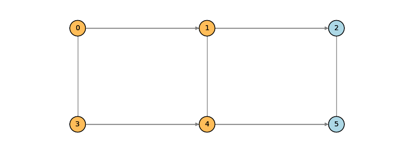
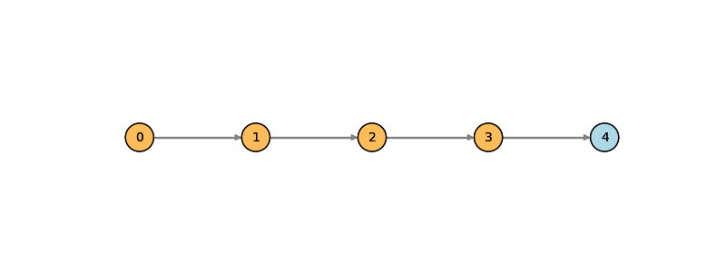
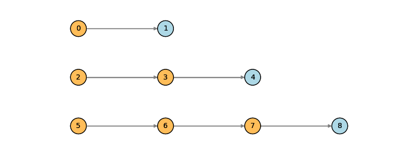
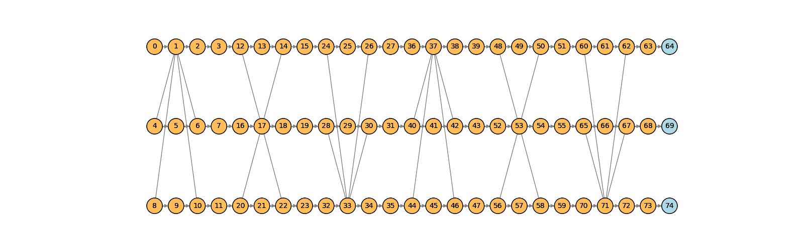

MentPy¶
MentPy is a library is composed of the following modules:
Operators¶
- class mentpy.PauliOp
Class for representing Pauli operators as matrices and strings.
This module contains operators for MBQC circuits.
-
class mentpy.operators.ControlMent(condition: bool | MentOutcome | None =
None, true_angle: int | float | tuple | str | None =None, true_plane: str | None ='XY', false_angle: int | float | tuple | str | None =0, false_plane: str | None ='X')¶ - property angle¶
- copy()¶
Returns a copy of the measurement.
-
get_povm(angle: float | None =
None, *args, **kwargs)¶ Returns the POVM representation of the measurement.
- property is_trainable¶
Returns True if the measurement is trainable.
-
matrix(angle: float | None =
None, *args, **kwargs)¶ Return the matrix of the controlled measurement operator.
- property plane¶
- mentpy.operators.ControlledMent¶
alias of
ControlMent
-
class mentpy.operators.Ment(angle: int | float | tuple | str | None =
None, plane: str | None ='XY')¶ Measurement operator.
- Parameters:¶
- property angle¶
- copy()¶
Returns a copy of the measurement.
-
get_povm(angle: float | None =
None, *args, **kwargs)¶ Returns the POVM representation of the measurement.
- is_trainable()¶
Returns True if the measurement is trainable.
-
matrix(angle: float | None =
None, *args, **kwargs)¶ Returns the matrix representation of the measurement.
- property outcome : MentOutcome¶
- property plane¶
- set_angle(angle)¶
Sets the angle of the measurement.
-
class mentpy.operators.MentOutcome(outcome: Callable[[...], bool], node_id=
None, cond_nodes=None)¶ Measurement outcome class.
- property cond_nodes¶
- property node_id¶
- class mentpy.operators.PauliOp(op: ndarray | str | List[str])¶
Class for representing Pauli operators as matrices and strings.
- Parameters:¶
Examples¶
Create a Pauli operator from a matrix
In [1]: op = mp.PauliOp(np.array([[1, 0, 0, 0], [0, 1, 0, 0], [0, 0, 0, 1], [0, 0, 1, 0]])) In [2]: print(op) XI IX IZ ZICreate a Pauli operator from a string
In [3]: op = mp.PauliOp('XIZ;ZII;IIZ;IZI') In [4]: print(op) XIZ ZII IIZ IZICreate a Pauli operator from a list of strings
In [5]: op = mp.PauliOp(['XIZ', 'ZII', 'IIZ', 'IZI']) In [6]: print(op) XIZ ZII IIZ IZI- Group:¶
operators
- append(other)¶
Appends a Pauli operator to the end of another Pauli operator.
Examples¶
In [1]: op1 = mp.PauliOp('XIZ;IZI') In [2]: op2 = mp.PauliOp('XZZ') In [3]: op1.append(op2) In [4]: print(op1) XIZ IZI XZZ
- get_subset(indices)¶
Returns a subset of the Pauli operator.
Examples¶
In [1]: op = mp.PauliOp('XIZ;ZII;IIZ;IZI') In [2]: print(op.get_subset([0, 2])) XZ ZI IZ II
- symplectic_prod(other)¶
Returns the symplectic product of two Pauli operators.
MBQCircuits¶
- class mentpy.GraphState(networkx.classes.graph.Graph)
A graph state class that inherits from networkx.Graph.
- class mentpy.MBQCircuit
The MBQCircuit class that deals with operations and manipulations of graph states
-
mentpy.draw(state: MBQCircuit | GraphState, fix_wires=
None, **) Draws mbqc circuit with flow.
- mentpy.hstack(states)
Horizontally stack a list of graph states into a larger graph state. This is, the input of the new MBQC circuit is the input of the first state, and the output is the output of the last state.
- mentpy.vstack(states)
Vertically stack a list of graph states into a larger graph state. This is, the input of the new MBQC circuit is the input of the first state, and the output is the output of the last state.
This module provides the functionalities to define graph states
- class mentpy.mbqc.GraphState(*args, **kwargs)¶
A graph state class that inherits from networkx.Graph.
Examples¶
Create a 1D cluster state \(|G>\) of five qubits
In [1]: g = mp.GraphState() In [2]: g.add_edges_from([(0,1), (1,2), (2,3), (3, 4)]) In [3]: print(g) GraphState with 5 nodes and 4 edgesSee also
- Group:¶
states
- index_mapping()¶
Return a mapping of the nodes to their indices.
-
class mentpy.mbqc.MBQCircuit(graph: GraphState, input_nodes: List[int] =
[], output_nodes: List[int] =[], measurements: dict[mentpy.operators.ment.Ment] | None =None, default_measurement: Ment | None =Ment(θ, XY), flow: Callable | None =None, partial_order: callable | None =None, measurement_order: List[int] | None =None, relabel_indices: bool =True)¶ The MBQCircuit class that deals with operations and manipulations of graph states
- Parameters:¶
Examples¶
Create a 1D cluster state \(|G>\) of five qubits
In [1]: g = mp.GraphState() In [2]: g.add_edges_from([(0,1), (1,2), (2,3), (3, 4)]) In [3]: state = mp.MBQCircuit(g, input_nodes=[0], output_nodes=[4])See also
mp.GraphState- Group:¶
states
- add_edge(u, v)¶
Adds an edge between nodes u and v
- add_edges_from(edges, **kwargs)¶
Adds edges from a list of tuples
- calculate_order()¶
Returns the order of the measurements
- property graph : GraphState¶
Return the graph of the resource state.
-
mentpy.mbqc.draw(state: MBQCircuit | GraphState, fix_wires=
None, **kwargs)¶ Draws mbqc circuit with flow.
TODO: Add support for graphs without flow, but with gflow TODO: Improve fix when there are control nodes
- Group:¶
states
- mentpy.mbqc.hstack(states)¶
Horizontally stack a list of graph states into a larger graph state. This is, the input of the new MBQC circuit is the input of the first state, and the output is the output of the last state.
- Group:¶
states
-
mentpy.mbqc.merge(state1: MBQCircuit, state2: MBQCircuit, along=
[]) MBQCircuit¶ Merge two MBQC circuits into a larger MBQC circuit. This is, the input and output of the new MBQC circuit will depend on the concat_indices.
- mentpy.mbqc.vstack(states)¶
Vertically stack a list of graph states into a larger graph state. This is, the input of the new MBQC circuit is the input of the first state, and the output is the output of the last state.
- Group:¶
states
Simulators¶
- class mentpy.BaseSimulator(abc.ABC)
Base class for simulators.
- class mentpy.CirqSimulator(mentpy.BaseSimulator)
Simulator for measuring patterns of MBQC circuits. .. note:: This is a placeholder for the Cirq simulator. It is not yet implemented.
- class mentpy.PatternSimulator
Simulator for measuring patterns of MBQC circuits.
- class mentpy.PennylaneSimulator(mentpy.BaseSimulator)
Simulator for measuring patterns of MBQC circuits.
- class mentpy.QiskitSimulator(mentpy.BaseSimulator)
Simulator for measuring patterns of MBQC circuits. .. note:: This is a placeholder for the Qiskit simulator. It is not yet implemented.
This module contains the different simulators for the MBQCircuit class
-
class mentpy.simulators.BaseSimulator(mbqcircuit: MBQCircuit, input_state: ndarray | None =
None)¶ Base class for simulators.
Note
This class should not be used directly. Instead, use one of the subclasses.
- Parameters:¶
See also
mp.PatternSimulator,mp.PennylaneSimulator,mp.CirqSimulator- Group:¶
simulators
- property mbqcircuit : MBQCircuit¶
The MBQC circuit used for the simulation.
-
abstract reset(input_state=
None)¶ Resets the simulator to the initial state.
-
class mentpy.simulators.CirqSimulator(mbqcircuit: MBQCircuit, input_state: ndarray | None =
None)¶ Simulator for measuring patterns of MBQC circuits. .. note:: This is a placeholder for the Cirq simulator. It is not yet implemented.
- Parameters:¶
See also
mp.PatternSimulator,mp.PennylaneSimulator- Group:¶
simulators
-
class mentpy.simulators.MBQCircuit(graph: GraphState, input_nodes: List[int] =
[], output_nodes: List[int] =[], measurements: dict[mentpy.operators.ment.Ment] | None =None, default_measurement: Ment | None =Ment(θ, XY), flow: Callable | None =None, partial_order: callable | None =None, measurement_order: List[int] | None =None, relabel_indices: bool =True)¶ The MBQCircuit class that deals with operations and manipulations of graph states
- Parameters:¶
Examples¶
Create a 1D cluster state \(|G>\) of five qubits
In [4]: g = mp.GraphState() In [5]: g.add_edges_from([(0,1), (1,2), (2,3), (3, 4)]) In [6]: state = mp.MBQCircuit(g, input_nodes=[0], output_nodes=[4])See also
mp.GraphState- Group:¶
states
- add_edge(u, v)¶
Adds an edge between nodes u and v
- add_edges_from(edges, **kwargs)¶
Adds edges from a list of tuples
- calculate_order()¶
Returns the order of the measurements
- property graph : GraphState¶
Return the graph of the resource state.
-
class mentpy.simulators.Ment(angle: int | float | tuple | str | None =
None, plane: str | None ='XY')¶ Measurement operator.
- Parameters:¶
- property angle¶
- copy()¶
Returns a copy of the measurement.
-
get_povm(angle: float | None =
None, *args, **kwargs)¶ Returns the POVM representation of the measurement.
- is_trainable()¶
Returns True if the measurement is trainable.
-
matrix(angle: float | None =
None, *args, **kwargs)¶ Returns the matrix representation of the measurement.
- property outcome : MentOutcome¶
- property plane¶
- set_angle(angle)¶
Sets the angle of the measurement.
-
class mentpy.simulators.NumpySimulatorDM(mbqcircuit: MBQCircuit, input_state: ndarray | None =
None, **kwargs)¶ A density matrix simulator that uses numpy to simulate the quantum circuit.
- arbitrary_qubit_gate(u, i, n)¶
Single qubit gate u acting on qubit i n is the number of qubits
- cnot_ij(i, j, n)¶
CNOT gate with j: target qubit n: number of qubits
- controlled_z(i, j, n)¶
Controlled z gate between qubits i and j. n is the total number of qubits
- find_swaps(source, target)¶
-
measure_ment(ment: Ment, angle, i, force0=
False)¶ Measures a ment
- partial_trace(rho, indices)¶
Partial trace of state rho over some indices
- pure2density(psi)¶
Input: quantum state Output: corresponding density matrix
- reorder_qubits(state, current_order, target_order)¶
Reorders the qubits in the given order.
- run(angles: List[float]) Tuple[List[int], ndarray]¶
Measures the quantum state in the given pattern.
- swap_ij(i, j, n)¶
Swaps qubit i with qubit j
-
class mentpy.simulators.PatternSimulator(mbqcircuit: MBQCircuit, input_state: ndarray | None =
None, backend='pennylane', *args, **kwargs)¶ Simulator for measuring patterns of MBQC circuits.
- Parameters:¶
See also
mp.PennylaneSimulator,mp.CirqSimulator- Group:¶
simulators
- class mentpy.simulators.PennylaneSimulator(mbqcircuit: MBQCircuit, input_state: ndarray, *args, **kwargs)¶
Simulator for measuring patterns of MBQC circuits.
- Parameters:¶
See also
mp.PatternSimulator,mp.CirqSimulator- Group:¶
simulators
-
reset(input_state=
None)¶ Resets the simulator to the initial state.
-
class mentpy.simulators.QiskitSimulator(mbqcircuit: MBQCircuit, input_state: ndarray | None =
None)¶ Simulator for measuring patterns of MBQC circuits. .. note:: This is a placeholder for the Qiskit simulator. It is not yet implemented.
- Parameters:¶
See also
mp.PatternSimulator,mp.PennylaneSimulator- Group:¶
simulators
Optimizers¶
This module contains the optimizers for the MBQCircuit class
-
class mentpy.optimizers.AdamOptimizer(step_size=
0.1, b1=0.9, b2=0.999, eps=1e-08)¶ Class for the Adam optimizer.
- Parameters:¶
Examples¶
Create an Adam optimizer
In [1]: opt = mp.optimizers.AdamOptimizer() In [2]: print(opt) <mentpy.optimizers.adam.AdamOptimizer object at 0x7f40db25d420>See also
mp.optimizers.SGDOptimizer- Group:¶
optimizers
-
optimize(f, x0, num_iters=
100, callback=None, verbose=False, **kwargs)¶ Optimize a function f using the Adam optimizer.
-
optimize_and_gradient_norm(f, x0, num_iters=
100, callback=None, verbose=False, **kwargs)¶ Optimize a function f using the Adam optimizer.
- reset()¶
Reset the optimizer.
-
update_step_size(x, i, factor=
0.99)¶ Update the step size of the optimizer.
-
class mentpy.optimizers.RCDOptimizer(step_size=
0.1, adaptive=False)¶ Class for the random coordinate descent optimizer.
- Parameters:¶
Examples¶
Create a random coordinate descent optimizer
In [1]: opt = mp.optimizers.RCDOptimizer() In [2]: print(opt) <mentpy.optimizers.rcd.RCDOptimizer object at 0x7f40db0e0220>- Group:¶
optimizers
-
optimize(f, x0, num_iters=
100, callback=None, verbose=False, **kwargs)¶ Optimize a function f using the random coordinate descent optimizer.
-
optimize_and_gradient_norm(f, x0, num_iters=
100, callback=None, verbose=False, **kwargs)¶ Optimize a function f using the random coordinate descent optimizer.
- reset(*args, **kwargs)¶
-
update_step_size(x, i, factor=
0.99)¶ Update the step size of the optimizer.
-
class mentpy.optimizers.SGDOptimizer(step_size=
0.1, momentum=0.0, nesterov=False)¶ Class for the SGD optimizer.
- Parameters:¶
Examples¶
Create an SGD optimizer
In [1]: opt = mp.optimizers.SGDOptimizer() In [2]: print(opt) <mentpy.optimizers.sgd.SGDOptimizer object at 0x7f40db0e3a90>See also
mp.optimizers.AdamOptimizer- Group:¶
optimizers
-
optimize(f, x0, num_iters=
100, callback=None, verbose=False, **kwargs)¶ Optimize a function f using the SGD optimizer.
-
optimize_and_gradient_norm(f, x0, num_iters=
100, callback=None, verbose=False, **kwargs)¶ Optimize a function f using the SGD optimizer.
- reset(*args, **kwargs)¶
-
update_step_size(x, i, factor=
0.99)¶ Update the step size of the optimizer.
Templates¶
This is the common_ansatz module. It has several common ansatzes that can be used for MBQC algorithms
- class mentpy.templates.GraphState(*args, **kwargs)¶
A graph state class that inherits from networkx.Graph.
Examples¶
Create a 1D cluster state \(|G>\) of five qubits
In [3]: g = mp.GraphState() In [4]: g.add_edges_from([(0,1), (1,2), (2,3), (3, 4)]) In [5]: print(g) GraphState with 5 nodes and 4 edgesSee also
- Group:¶
states
- index_mapping()¶
Return a mapping of the nodes to their indices.
-
class mentpy.templates.MBQCircuit(graph: GraphState, input_nodes: List[int] =
[], output_nodes: List[int] =[], measurements: dict[mentpy.operators.ment.Ment] | None =None, default_measurement: Ment | None =Ment(θ, XY), flow: Callable | None =None, partial_order: callable | None =None, measurement_order: List[int] | None =None, relabel_indices: bool =True)¶ The MBQCircuit class that deals with operations and manipulations of graph states
- Parameters:¶
Examples¶
Create a 1D cluster state \(|G>\) of five qubits
In [9]: g = mp.GraphState() In [10]: g.add_edges_from([(0,1), (1,2), (2,3), (3, 4)]) In [11]: state = mp.MBQCircuit(g, input_nodes=[0], output_nodes=[4])See also
mp.GraphState- Group:¶
states
- add_edge(u, v)¶
Adds an edge between nodes u and v
- add_edges_from(edges, **kwargs)¶
Adds edges from a list of tuples
- calculate_order()¶
Returns the order of the measurements
- property graph : GraphState¶
Return the graph of the resource state.
-
class mentpy.templates.Ment(angle: int | float | tuple | str | None =
None, plane: str | None ='XY')¶ Measurement operator.
- Parameters:¶
- property angle¶
- copy()¶
Returns a copy of the measurement.
-
get_povm(angle: float | None =
None, *args, **kwargs)¶ Returns the POVM representation of the measurement.
- is_trainable()¶
Returns True if the measurement is trainable.
-
matrix(angle: float | None =
None, *args, **kwargs)¶ Returns the matrix representation of the measurement.
- property outcome : MentOutcome¶
- property plane¶
- set_angle(angle)¶
Sets the angle of the measurement.
-
mentpy.templates.grid_cluster(n, m, periodic=
False, **kwargs) MBQCircuit¶ Returns a grid cluster state of n x m qubits.
Examples¶
Create a 2D cluster state \(|G>\) of five qubits
In [1]: g = mp.templates.grid_cluster(2, 3) In [2]: mp.draw(g)- Group:¶
templates
{kind=link}
- mentpy.templates.hstack(states)¶
Horizontally stack a list of graph states into a larger graph state. This is, the input of the new MBQC circuit is the input of the first state, and the output is the output of the last state.
- Group:¶
states
- mentpy.templates.linear_cluster(n, **kwargs) MBQCircuit¶
Returns a linear cluster state of n qubits.
Examples¶
Create a 1D cluster state \(|G>\) of five qubits
In [1]: g = mp.templates.linear_cluster(5) In [2]: mp.draw(g)- Group:¶
templates
{kind=link}
- mentpy.templates.many_wires(n_wires: List, **kwargs) MBQCircuit¶
Returns a graph state with many wires.
- Parameters:¶
- n_wires : List¶
A list of the number of qubits in each wire.
- Return type:¶
The graph state with many wires.
Examples¶
Create a graph state with three wires of 2, 3, and 4 qubits respectively
In [1]: g = mp.templates.many_wires([2, 3, 4]) In [2]: mp.draw(g)- Group:¶
templates
{kind=link}
-
mentpy.templates.merge(state1: MBQCircuit, state2: MBQCircuit, along=
[]) MBQCircuit¶ Merge two MBQC circuits into a larger MBQC circuit. This is, the input and output of the new MBQC circuit will depend on the concat_indices.
- mentpy.templates.muta(n_wires, n_layers, **kwargs)¶
This is the Multiple Triangle Ansatz (MuTA) template.
Examples¶
Create a MuTA ansatz with 3 wires and 2 layers
In [1]: g = mp.templates.muta(3, 2) In [2]: mp.draw(g, figsize=(16,5))- Group:¶
templates
{kind=link}
-
mentpy.templates.spturb(n_qubits: int, n_layers: int, periodic=
False, **kwargs)¶ This is the Symmetry Protected Topological Perturbator Ansatz (SPTurb) template.
Utils¶
-
class mentpy.utils.FlowSpace(graph_state: MBQCircuit, allow_any_size_graphs: bool =
False)¶ The flow space graph of a MBQCGraph.
Each node corresponds to a possible graph over
len(graph_state)qubits. Each edge between nodes represent going from one graph to another via adding or removing edges.Note
flow_space()will only work for MBQCGraph with lessthan 8 qubits.
- all_graphs_graph()¶
Returns a tuple with three graphs.
The first graph is the graph corresponding to all possible graphs. The second is the subgraph of all graphs with flow. The third is the subgraph of all graphs without flow.
- generator_all_graphs()¶
Returns a generator that generates all possible graphs for \(n\) ordered nodes.
- mentpy.utils.GF¶
alias of
GF2
-
class mentpy.utils.MBQCircuit(graph: GraphState, input_nodes: List[int] =
[], output_nodes: List[int] =[], measurements: dict[mentpy.operators.ment.Ment] | None =None, default_measurement: Ment | None =Ment(θ, XY), flow: Callable | None =None, partial_order: callable | None =None, measurement_order: List[int] | None =None, relabel_indices: bool =True)¶ The MBQCircuit class that deals with operations and manipulations of graph states
- Parameters:¶
Examples¶
Create a 1D cluster state \(|G>\) of five qubits
In [3]: g = mp.GraphState() In [4]: g.add_edges_from([(0,1), (1,2), (2,3), (3, 4)]) In [5]: state = mp.MBQCircuit(g, input_nodes=[0], output_nodes=[4])See also
mp.GraphState- Group:¶
states
- add_edge(u, v)¶
Adds an edge between nodes u and v
- add_edges_from(edges, **kwargs)¶
Adds edges from a list of tuples
- calculate_order()¶
Returns the order of the measurements
- property graph : GraphState¶
Return the graph of the resource state.
-
class mentpy.utils.PatternSimulator(mbqcircuit: MBQCircuit, input_state: ndarray | None =
None, backend='pennylane', *args, **kwargs)¶ Simulator for measuring patterns of MBQC circuits.
- Parameters:¶
See also
mp.PennylaneSimulator,mp.CirqSimulator- Group:¶
simulators
- class mentpy.utils.PauliOp(op: ndarray | str | List[str])¶
Class for representing Pauli operators as matrices and strings.
- Parameters:¶
Examples¶
Create a Pauli operator from a matrix
In [6]: op = mp.PauliOp(np.array([[1, 0, 0, 0], [0, 1, 0, 0], [0, 0, 0, 1], [0, 0, 1, 0]])) In [7]: print(op) XI IX IZ ZICreate a Pauli operator from a string
In [8]: op = mp.PauliOp('XIZ;ZII;IIZ;IZI') In [9]: print(op) XIZ ZII IIZ IZICreate a Pauli operator from a list of strings
In [10]: op = mp.PauliOp(['XIZ', 'ZII', 'IIZ', 'IZI']) In [11]: print(op) XIZ ZII IIZ IZI- Group:¶
operators
- append(other)¶
Appends a Pauli operator to the end of another Pauli operator.
Examples¶
In [12]: op1 = mp.PauliOp('XIZ;IZI') In [13]: op2 = mp.PauliOp('XZZ') In [14]: op1.append(op2) In [15]: print(op1) XIZ IZI XZZ
- get_subset(indices)¶
Returns a subset of the Pauli operator.
Examples¶
In [16]: op = mp.PauliOp('XIZ;ZII;IIZ;IZI') In [17]: print(op.get_subset([0, 2])) XZ ZI IZ II
- symplectic_prod(other)¶
Returns the symplectic product of two Pauli operators.
-
mentpy.utils.are_lc_equivalent(graph1, graph2, clifford_form=
'tensor')¶ Check if two EGraphs are LC equivalent, and return the Clifford operation if so. Implemented as in arXiv:quant-ph/0405023. :param graph1: the initial graph to check Clifford equivalence with. :param graph2: the graph to check Clifford equivalence against. :param clifford_form: a string describing the output form of local Clifford operation, if
it exists. If ‘tensor’ (default), produce a list of length n of 2x2 numpy arrays corresponding to
single-qubit tensor factors.
- If ‘global’, return a single 2nx2n numpy array corresponding to the global operator
acting on all n qubits.
- mentpy.utils.binary_gaussian_elimination(A, b)¶
- mentpy.utils.brownian_circuit(dim, n, dt)¶
Returns a random unitary matrix close to the identity matrix
- mentpy.utils.calculate_complete_gens_lie_algebra(state: MBQCircuit)¶
Calculates the Pauli operators for the Lie algebra of a given state
- mentpy.utils.calculate_gens_lie_algebra(state: MBQCircuit)¶
Calculates the generators of the Lie algebra of a given state
-
mentpy.utils.calculate_lie_algebra(state: MBQCircuit, max_iter: int =
10000)¶ Calculates the Lie algebra of a given state
- mentpy.utils.clifford_vec_to_global(vec)¶
Convert a local Clifford gate on n qubits to a local Clifford gate on all n qubits. Take a vector corresponding to a local Clifford gate on n qubits, (a_1, a_2, …, a_n, b_1, b_2, …, b_n, c_1, c_2, …, c_n, d_1, d_2, …, d_n), and return a single 2n x 2n array representing a local Clifford acting on all n qubits, given as the block matrix:
[A, B] [C, D]
- where each block is a n x n diagonal matrix:
A = diag(a_1, a_2, …, a_n) B = diag(b_1, b_2, …, b_n) C = diag(c_1, c_2, …, c_n) D = diag(d_1, d_2, …, d_n).
- mentpy.utils.clifford_vec_to_tensors(vec)¶
Convert a local Clifford gate on n qubits to a list of n single-qubit Cliffords. Take a local Clifford operation on n qubits in the form (a_1, a_2, …, a_n, b_1, b_2, …, b_n, c_1, c_2, …, c_n, d_1, d_2, …, d_n), and return a list of single-qubit Clifford gates as a list of 2x2 arrays, where the array at index k corresponds to the Clifford acting on qubit k given as:
[a_k, b_k] [c_k, d_k].
- class mentpy.utils.combinations(iterable, r)¶
Return successive r-length combinations of elements in the iterable.
combinations(range(4), 3) –> (0,1,2), (0,1,3), (0,2,3), (1,2,3)
-
mentpy.utils.digraph_expressivity_of_flow_space(flow_space: FlowSpace, method=
'KL', **kwargs)¶ Returns digraph given the expressivity of a
FlowSpaceobject.- Parameters:¶
- (FlowSpace) : flow_space
- (str) : method
- mentpy.utils.dim_so(n)¶
Calculates the dimension of \(So(n)\)
- mentpy.utils.dim_sp(n)¶
Calculates the dimension of \(Sp(n)\)
- mentpy.utils.dim_su(n)¶
Calculates the dimension of \(Su(n)\)
- mentpy.utils.draw_digraph_flow_space(digraph_expr: <module 'networkx.classes.digraph' from '/opt/hostedtoolcache/Python/3.10.11/x64/lib/python3.10/site-packages/networkx/classes/digraph.py'>, **kwargs)¶
Draws the expressivity digraph of flow space
-
mentpy.utils.expressivity_with_histogram(graph_state_circuit: MBQCircuit, n_samples: int =
10000, n_bins: int =1000, method: str ='KL')¶ Returns the expressivity calculated using the Kullback-Leiber entropy
-
mentpy.utils.generate_haar_random_states(n_qubits: int, n_samples: int =
1) ndarray¶ Makes one Haar random state over n_qubits
- mentpy.utils.haar_probability_density_of_fidelities(F: float, n_qubits: int)¶
Returns the probability density function of fidelities \(P_{Haar}(F) = (N-1)(1-F)^{N-2}\) where \(N = 2^{n}\) is the dimension of the Hilbert space.
-
mentpy.utils.lc_cluster_flowspace(deg_graph, sanity_check=
True)¶ Cluster flow graph in lc_equivalent graphs.
- mentpy.utils.lc_constraint_system(G, H)¶
Build the constraint for LC-equivalence of two adjacency matrices. Construct a binary system of equations that two adjacency matrices G and H must satisfy for equivalence through local complementations. :param G: n x n adjacency matrices. :type G: numpy.array :param H: n x n adjacency matrices. :type H: numpy.array
-
mentpy.utils.lie_algebra_completion(generators: PauliOp, max_iter: int =
1000)¶ Completes a given set of Pauli operators to a basis of the Lie algebra
- mentpy.utils.nullspace_basis(M)¶
Return the nullspace basis of matrix M. Construct an array whose rows are binary basis vectors of the right nullspace of input matrix array. :param M: a binary matrix. :type M: numpy.array
- mentpy.utils.randomUnitary_closetoid(dim, t, n)¶
Returns a random unitary matrix close to the identity matrix
- mentpy.utils.random_special_unitary(n_qubits: int)¶
Returns a random special unitary in
n_qubitssampled from the Haar distribution.
-
mentpy.utils.random_train_test_states_unitary(unitary: ndarray, n_samples: int, test_size: float =
0.3) tuple¶ Return random training and test data (input, target) for a given unitary gate
unitary.
-
mentpy.utils.random_train_test_states_unitary_noise(unitary: ndarray, n_samples: int, noise_level: float =
0.0, noise_type='brownian', test_size: float =0.3) tuple¶ Return random training data (input, target) for a given unitary gate
unitarywith brownian noise parametrized bynoise_level.
-
mentpy.utils.reduce_RREform_mod2(M, max_cols=
None)¶ Put a binary matrix into row reduced echelon form modulo 2, up to a maximum number of columns given by max_cols. :param M: the matrix to reduce. :type M: numpy.array :param max_cols: the maximum number of columns of the input array to reduce. :type max_cols: int
-
mentpy.utils.sample_probability_density_of_fidelities(graph_state_circuit: MBQCircuit, n_samples=
1000, backend='pennylane')¶ Calculates samples of the probability of fidelities of the given graph state circuit
- mentpy.utils.search_nullspace(basis)¶
- Check if the nullspace satisfies the determinant constraints.
Search through sums of pairs of basis vectors of the nullspace and see if any satisfy the determinant constraints. If no solution is found, output None. If a solution is found, return a vector specifying the local Clifford in the form:
(a_1, a_2, …, a_n, b_1, b_2, …, b_n, c_1, c_2, …, c_n, d_1, d_2, …, d_n),
where n is the number of nodes of the graph.